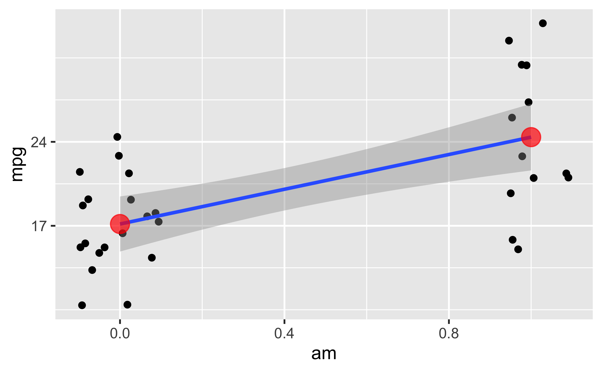

Sie würden gerne Bayes lernen und dafür zwischen 1-3 Wochen Zeit investieren? Dann sind Sie hier falsch. Dieser Post zeigt einen Kurzüberblick in Bayes-Statistik in fünf Minuten. Naja, ich probiere es jedenfalls.
Sagen wir, uns interessiert folgende Forschungsfrage, die mit Methoden der Inferenz-Statistik untersucht werden soll. In diesem Fall Bayes-Inferenz (nicht Frequentistische Statistik).
Verbrauchen Autos mit Automatik-Getriebe im Durchschnitt mehr Sprit als Autos mit manuellem Getriebe?
Die AV ist metrisch. Die UV ist binär. Wir vergleichen also zwei Gruppen, das ist ähnlich zum t-Test.
data("mtcars") #
library(rstanarm) # Bayes
library(tidyverse) # DatenjudoDer Datensatz mtcars ist “fest eingebaut” in R, so dass wir ihn nicht irgendwo herunterladen müsstenn.
Hilfe zum Datensatz bekommt man so:
help(mtcars) # Hilfe/Codebook zum Datensatz
# Output hier nicht dargestelltZwar nicht Gegenstand dieses Posts, aber hilfreich, daher hier nur kurz ein Bild ohne Syntax:

Die einfache Regression (also mit 1 UV) hat zwei Koeffizienten: Achsenabschnitt und Steigung.
Bei einer binären (zweistufigen) UV bedeutet das:
Der vorhergesagte Wert der zweiten Gruppe ergibt sich also als Summe von Achsenabschnitt plus Steigung.
Nutzen wir das allgemeine (oder verallgemeinerte) lineare Modell, um unsere Forschungsfrage zu beantworten. Anders gesagt: Wir berechnen einen Regression. Das schöne an einer Regression ist, sie passt1 auf die meisten Probleme, so ähnlich wie ein Schweizer Taschenmesser.
m1 <- stan_glm(mpg ~ am, data = mtcars)Schön oder: Die Syntax von stan_glm() entspricht der Syntax von lm().
coef(m1)## (Intercept) am
## 17.176828 7.191718Was wir bekommen, sind Punktschätzer für die Population:
Der Achsenabschnitt wird auf ca. 17 geschätzt. Die Steigung (Unterschied zwischen den Gruppen) wird auf ca. 7 geschätzt.
In Bayes gibt es das Wort “signifikant” nicht. Formulieren wir die Frage doch so um:
Liegt der Wert “Null” innerhalb oder außerhalb des 90%-Konfidenzintervalls (KI?
posterior_interval(m1)## 5% 95%
## (Intercept) 15.305426 19.002113
## am 4.283285 10.191900
## sigma 4.094537 6.247447Das 90%-KI wird auf den Bereich von ca. 4 bis 10 geschätzt. Die Null liegt nicht in diesem Intervall.
Folglich verwerfen wir die Nullhypothese.
Also gut…
posterior_interval(m1, prob = .89) # oder auch prob = .95 etc.## 5.5% 94.5%
## (Intercept) 15.349152 18.966175
## am 4.341207 10.080387
## sigma 4.112788 6.200624Richard McElreath begründet die 89 so: Es ist die kleinste Primzahl kleiner als 95. Noch Fragen? :smile
Ich fasse zusammen. Wir haben gerade Bayes-Statistik betrieben. Und zwar haben wir ein einfaches Regressionsmodell, analog zum t-Test, berechnet. Dann haben wir ein Bayes-Analog zur Nullhypothese und zum Konfidenzintervall uns ausgeben lassen.
Im Frequentismus sind die zentralen Statistiken schwierig zu interpretieren.
In der Bayes-Statistik ist es einfach. Wir können sagen, dass (laut Modell!) der (mittlere) Gruppenunterschie mit 90% Wahrscheinlichkeit zwischen 4 und 10 Gallonen Sprit liegt.
Oft ist sie nur eine Näherung und manchmal eine schlechte, aber man kann erstaunlich viel mit der Regression machen, auch nicht-lineare wie polynombasierte oder exponentielle Zusammenhänge modellieren.↩︎